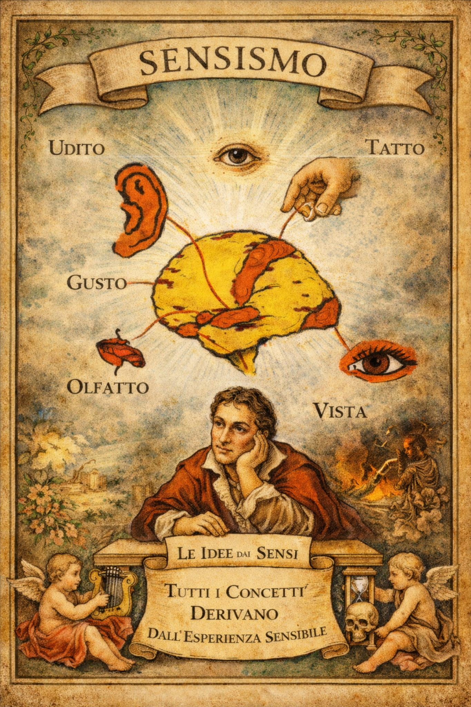

Il sensismo
Il sensismo è una teoria della conoscenza secondo cui tutte le idee derivano dai sensi.
Non esistono idee innate, non esistono verità già scritte dentro di noi: l’uomo conosce solo ciò che ha prima percepito.
Vedere, toccare, udire, odorare, gustare: è da qui che nasce tutto.
Secondo il sensismo, la mente non è una fonte autonoma di contenuti, ma una sorta di laboratorio che rielabora materiali provenienti dall’esperienza sensibile. Prima viene l’esperienza, poi l’idea. Senza esperienza, nessun concetto.

Da questa impostazione deriva anche una visione dell’agire umano molto precisa:
Piacere e dolore sono le due grandi guide dell’azione.
Cerchiamo ciò che produce piacere.
Evitiamo ciò che provoca dolore.
Ogni scelta, anche la più complessa, affonda le radici in queste due forze fondamentali.
Il sensismo nasce in ambito illuminista e si sviluppa soprattutto nel Settecento (in Francia in particolare), come reazione contro le teorie che parlavano di idee innate o di conoscenze indipendenti dall’esperienza.
In sintesi
L’uomo conosce perché sente.
L’uomo agisce perché prova piacere o dolore.
Tutto parte dal corpo. La mente viene dopo.